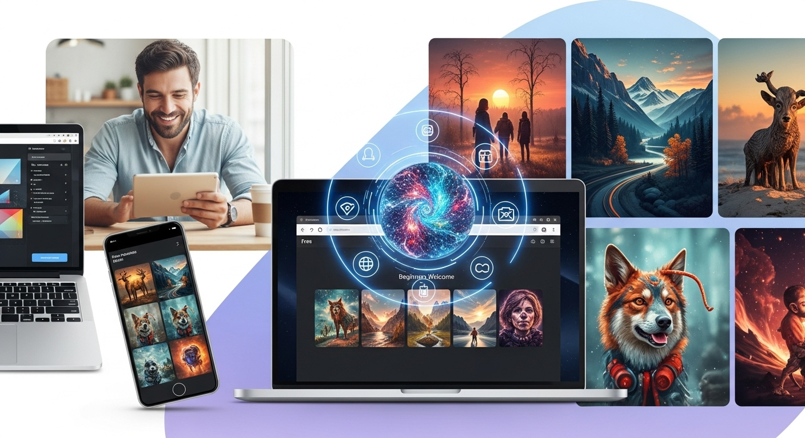
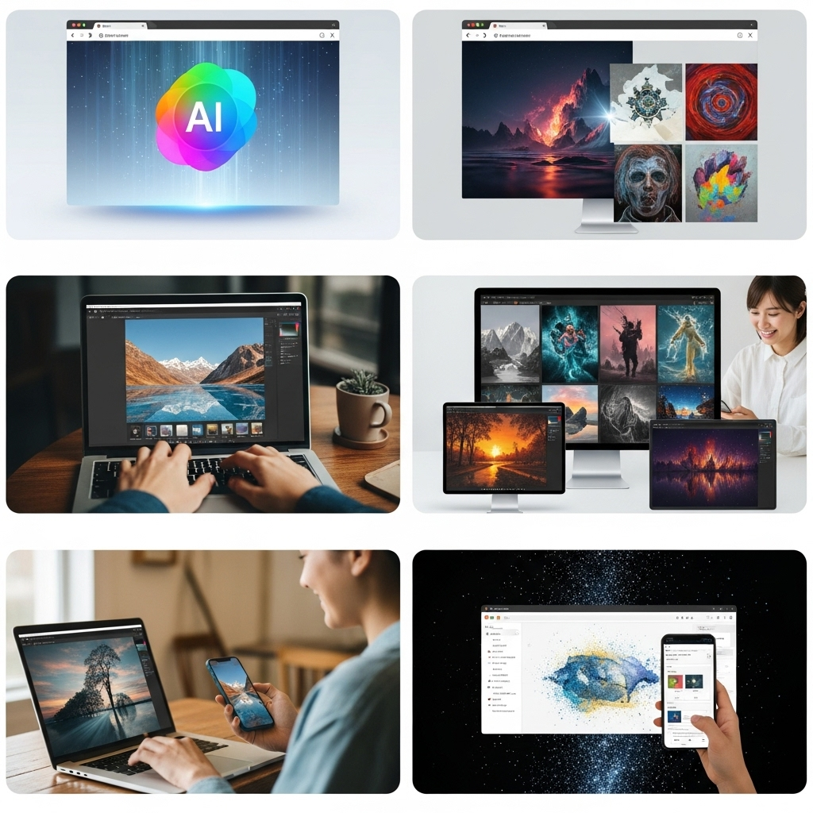
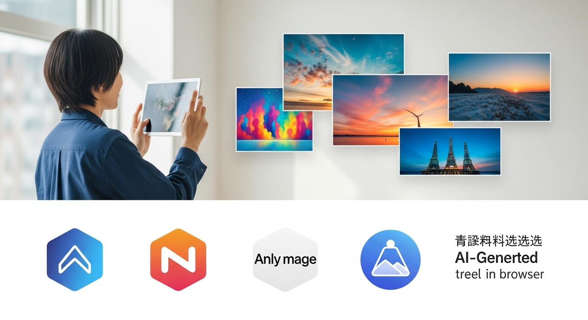
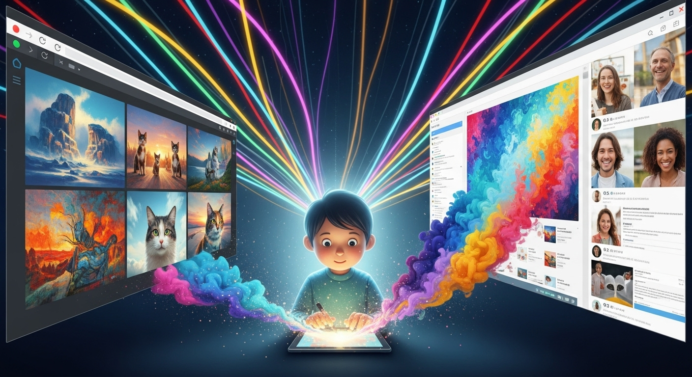
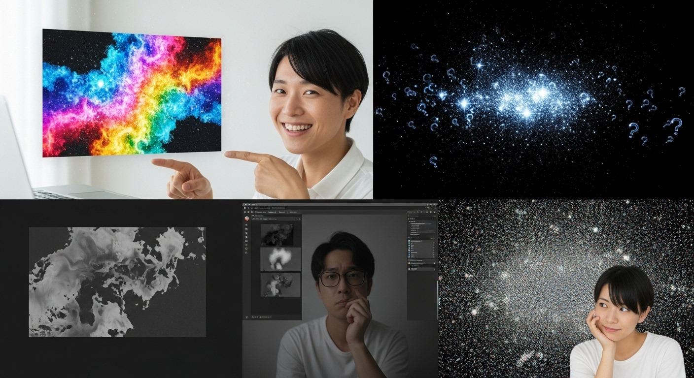
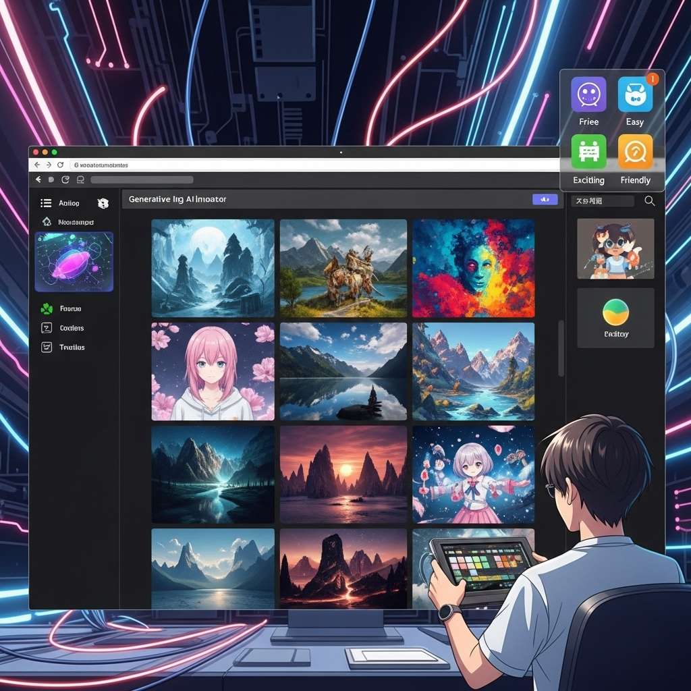

生成AI画像を無料でブラウザ生成！初心者でも簡単・高品質なツール選び

近年、テクノロジーの進化は私たちの想像をはるかに超えるスピードで進んでいます。その中でも特に注目を集めているのが「生成AI」の分野です。テキストを入力するだけで、まるで魔法のように美しい画像やイラストが生成される技術は、多くのクリエイターやビジネスパーソン、そして一般のユーザーに新たな可能性をもたらしています。
「AIで画像を生成するなんて、なんだか難しそう……」「高価なソフトウェアが必要なのでは？」と、まだ一歩踏み出せずにいる方もいらっしゃるかもしれません。しかし、ご安心ください。現在の生成AI画像ツールは、特別なスキルや高価な機材がなくても、誰もが手軽に、そして無料で始めることができる時代になっています。特に、ブラウザ上で完結するツールが増えたことで、その敷居は格段に下がりました。
この記事では、生成AI画像ツールを無料で、しかもブラウザで利用するメリットから、初心者の方でも安心して使えるおすすめツール、基本的な使い方、そしてブログやSNSでの活用ヒント、さらには知っておくべきデメリットや注意点まで、網羅的にご紹介します。読者の皆様が、この最先端の技術を気軽に楽しみ、クリエイティブな活動に役立てられるよう、落ち着いたトーンで、しかししっかりと、そして優しく親しみやすい雰囲気でお伝えしてまいります。さあ、あなたも生成AI画像の世界へ、一緒に踏み出してみませんか。
生成AI画像を無料でブラウザ生成！手軽に始めるメリット

生成AI画像の技術は、かつては専門家や限られた技術者だけのものでした。しかし、今やその進化は目覚ましく、私たちの誰もが気軽にその恩恵を受けられるようになっています。特に「無料でブラウザ生成」という手軽さは、多くの人々にとって大きなメリットをもたらします。この章では、その具体的なメリットについて深掘りしていきましょう。
メリット１．そもそも生成AI画像とは？初心者でもわかる基本
まず、「生成AI画像」とは一体何でしょうか。簡単に言えば、人工知能（AI）がテキスト（「プロンプト」と呼ばれる指示文）や既存の画像データなどに基づいて、全く新しい画像を自動的に作り出す技術のことを指します。これまで人間が時間をかけてデザインしたり、絵を描いたり、写真を撮ったりして作り上げてきたビジュアルコンテンツを、AIが瞬時に生成してくれるのです。
この技術の裏側には、膨大な画像データとそれに対応するテキストデータ（キャプションなど）を学習した「大規模なAIモデル」が存在します。このAIモデルは、学習したデータの中から特徴やパターンを抽出し、私たちが入力したプロンプトと合致するような画像を「生成」します。まるで、私たちが頭の中で思い描くイメージを、AIが絵筆やカメラの代わりに形にしてくれるようなものです。
具体的には、「夕焼けのビーチで犬が遊んでいる、アニメ風のイラスト」といった具体的な指示から、本当にそのような画像を生成することができます。写実的な写真のような画像から、油絵のようなアート作品、可愛らしいキャラクターイラスト、さらには抽象的なデザインまで、その表現の幅は無限大です。
この技術は、主に「ディープラーニング」というAIの一分野、特に「拡散モデル（Diffusion Model）」と呼ばれる技術によって支えられています。拡散モデルは、ノイズだらけの画像から少しずつノイズを取り除き、最終的に目的の画像を生成するというプロセスを経て、驚くほど高品質な画像を生成することを可能にしました。
生成AI画像は、専門的なデザインスキルや高度な画像編集ソフトウェアの知識がなくても、誰でも簡単にクリエイティブな表現を可能にします。アイデアさえあれば、それを形にする強力なツールとして、私たちの日常に新たな彩りをもたらしてくれるでしょう。
メリット２．ブラウザ型ツールが選ばれる理由と無料利用の魅力
生成AI画像ツールが多数登場する中で、なぜ「ブラウザ型」がこれほどまでに注目され、多くのユーザーに選ばれているのでしょうか。そして、その「無料利用」にはどのような魅力があるのでしょうか。
ブラウザ型ツールが選ばれる理由
-
インストール不要、OSを選ばない手軽さ:
従来の画像編集ソフトウェアのように、PCに専用のアプリケーションをインストールする必要がありません。インターネットに接続できる環境とブラウザさえあれば、Windows、Mac、LinuxといったOSの種類を問わず、どのデバイスからでも利用可能です。これは、外出先のカフェで、あるいは友人の家で、急に画像が必要になった際にも非常に便利です。 -
PCスペックに依存しない（クラウドで処理されるため）:
画像を生成するプロセスは、非常に高い計算能力を必要とします。通常、高性能なグラフィックボード（GPU）を搭載したPCでなければ、スムーズな画像生成は困難でした。しかし、ブラウザ型の生成AIツールは、その計算処理をすべてクラウド上のサーバーで行います。つまり、私たちのPCのスペックに関わらず、AIが持つ最高の性能を享受できるのです。古いPCやタブレットからでも、最新のAIモデルを使った高品質な画像生成が可能です。 -
どこからでもアクセス可能:
アカウント情報があれば、どのデバイスからでもログインして、過去の生成履歴を確認したり、中断した作業を再開したりできます。場所を選ばずにクリエイティブな活動ができるのは、現代の多様なワークスタイルにもマッチしています。
無料利用の魅力
-
コストゼロで気軽に試せる:
最も大きな魅力は、やはり「無料」であることです。AI技術に興味はあるけれど、いきなり有料ツールに手を出すのはためらわれる、という方にとって、無料版は最高の入り口となります。金銭的なリスクなしに、AI画像生成の楽しさや可能性を体験できます。 -
学習コストが低い:
無料ツールは、多くの場合、基本的な機能に絞られており、直感的なインターフェースで設計されています。これにより、専門的な知識がなくても、試行錯誤しながら使い方を学ぶことができます。失敗を恐れずに様々なプロンプトを試せるため、効率的にスキルを習得できるでしょう。 -
有料版へのスムーズな移行:
無料版でAI画像生成の面白さを知り、より高度な機能や無制限の生成、高解像度出力などを求めるようになった場合、多くのツールでは有料プランが用意されています。無料版で得た経験を活かし、スムーズに有料版へ移行することで、さらにクリエイティブな幅を広げることが可能です。
ブラウザ型かつ無料の生成AI画像ツールは、手軽さ、アクセシビリティ、そしてコストパフォーマンスの高さから、まさに「誰でもクリエイターになれる時代」を象徴する存在と言えるでしょう。
メリット３．デザインスキル不要！誰でもクリエイティブな画像作成
従来の画像作成プロセスを考えると、専門的なデザインスキルや高価なソフトウェアの習得は不可欠でした。フォトショップやIllustratorといったツールを使いこなすには、それなりの学習期間と実践経験が必要です。しかし、生成AI画像の登場は、この常識を根本から覆しました。
デザインスキル不要でクリエイティブな画像作成が可能に
-
アイデアさえあれば形にできる:
生成AIの最大の魅力は、デザインの知識がなくても、頭の中にある漠然としたイメージや具体的なアイデアをテキストとして入力するだけで、視覚的な形にできる点です。「青い空と白い雲、芝生の上でピクニックをする家族のイラスト」「未来都市の夜景、ネオンが輝くサイバーパンク風」といった言葉を打ち込むだけで、AIがその情景を具現化してくれます。絵が苦手な方、デザインのセンスに自信がない方でも、思い描いた世界を簡単に創り出すことができるのです。 -
クリエイティブな表現の幅が広がる:
生成AIは、単に画像を生成するだけでなく、様々なスタイルや画風を再現できます。例えば、「油絵風」「水彩画風」「アニメ風」「CGイラスト風」「写真のようにリアルな」といった指示を加えるだけで、同じテーマでも全く異なる雰囲気の画像を生成できます。これにより、個人の趣味の範囲での創作活動はもちろん、ブログ記事のアイキャッチ、SNSの投稿画像、プレゼンテーション資料の挿絵など、多岐にわたるシーンで、より魅力的で個性的なビジュアルを簡単に作成することが可能になります。 -
非デザイナーや個人ブロガー、SNSユーザーへの恩恵:
これまで、ブログやSNSの投稿で目を引く画像を使いたいと思っても、フリー素材サイトから探すか、プロのデザイナーに依頼するしか選択肢がありませんでした。しかし、生成AIを使えば、自分のコンテンツに完全にフィットするオリジナル画像を、誰でも簡単に、しかも無料で作成できます。これにより、コンテンツの質を高め、読者やフォロワーのエンゲージメント向上に繋げることが期待できます。
例えば、料理ブログであれば、レシピに合わせたオリジナルの料理イラストを生成したり、旅行ブログであれば、まだ見ぬ絶景のイメージ画像を創り出したりと、その活用方法は無限大です。デザインの専門家ではない個人が、プロレベルのビジュアルコンテンツを手軽に生み出せるようになったことは、まさに革新的な恩恵と言えるでしょう。
生成AI画像ツールは、クリエイティブな活動を特別なものから、誰もが日常的に楽しめるものへと変えつつあります。デザインスキルがないことを理由に諦めていた方も、ぜひこの機会に、AIの力を借りてあなたのクリエイティブな側面を開花させてみてください。
【厳選】おすすめ無料生成AI画像ツール5選（ブラウザ対応）

生成AI画像ツールは日々進化しており、その種類も多岐にわたります。ここでは、初心者の方でも手軽に始められ、かつブラウザで利用できる無料ツールの中から、特に厳選した5つをご紹介します。それぞれのツールの特徴と、どのような活用例があるのかを詳しく解説しますので、ご自身の目的に合ったツール選びの参考にしてください。
おすすめツール１．Bing Image Creator (DALL-E 3ベース)：特徴と活用例
Microsoftが提供する「Bing Image Creator」は、OpenAIの最新画像生成モデル「DALL-E 3」を搭載していることが最大の特徴です。Microsoftアカウントがあれば誰でも無料で利用でき、その手軽さと高品質な画像生成能力で、多くのユーザーから支持を得ています。
特徴
- DALL-E 3の高品質な画像生成: DALL-E 3は、プロンプトの解釈能力が非常に高く、複雑な指示やニュアンスを正確に捉えて画像を生成する能力に優れています。そのため、意図通りの画像を生成しやすいのが大きな強みです。
- 日本語プロンプトに強い: 日本語でのプロンプト入力に対する理解度が高く、英語が苦手な方でも安心して利用できます。自然な日本語で指示を出すだけで、質の高い画像を生成してくれます。
- クレジット制: 画像生成には「ブースト」と呼ばれるクレジットを消費します。毎日一定数が無料で付与され、Microsoft Rewardsのポイントで追加することも可能です。ブーストがなくなっても生成は可能ですが、処理速度が遅くなります。
- シンプルなインターフェース: 余計な機能がなく、テキスト入力欄と生成ボタンがメインの非常にシンプルなUIなので、初心者でも迷うことなくすぐに使い始められます。
- 安全性と倫理への配慮: Microsoftのガイドラインに基づき、不適切なコンテンツの生成には制限がかけられています。安心して利用できる環境が整っています。
活用例
- ブログ記事のアイキャッチ画像: 記事の内容に合わせて、具体的な情景やコンセプトをプロンプトで記述することで、オリジナリティの高いアイキャッチ画像を生成できます。「テクノロジーの進化を描いた未来的なイラスト、青と緑のグラデーション、SF風」といった指示で、記事の内容を象徴する画像を手軽に作成可能です。
- SNSの投稿画像: 日常の投稿やイベント告知などで、目を引くビジュアルを作成するのに最適です。「コーヒーカップと本が並んだ、温かい雰囲気のカフェの風景、写実的な写真風」といったプロンプトで、魅力的な画像を簡単に用意できます。
- プレゼンテーション資料の挿絵: プレゼンのテーマに合わせたイラストや風景画像を生成し、視覚的な魅力を高めることができます。「環境問題について考える、地球と植物が共生するイメージ、水彩画風」といった画像を挿入することで、メッセージをより効果的に伝えることができます。
- アイデア出しのビジュアル化: 新しい商品やサービス、イベントのアイデアを視覚化する際にも役立ちます。「子供向けの新しいおもちゃ、ロボットと動物が合体したデザイン、カラフルで可愛らしい」といったイメージを具体的に生成し、チーム内での共有や検討に活用できます。
Bing Image Creatorは、その手軽さとDALL-E 3の高い生成能力により、AI画像生成の入門ツールとして、また日常的なコンテンツ作成の強力な味方として、非常に価値のあるツールです。
おすすめツール２．Leonardo.Ai：特徴と活用例
「Leonardo.Ai」は、Stable Diffusionをベースとしながらも、独自のカスタマイズされたモデルや豊富な機能を提供し、よりクリエイティブな表現を追求したいユーザーに人気の高いツールです。無料利用でも多くの機能が利用でき、その柔軟性と高品質な出力で注目されています。
特徴
- 豊富なAIモデルとスタイル: Stable Diffusionの派生モデルだけでなく、Leonardo.Ai独自のファインチューニングされたモデル（Leonardo Diffusion、Alchemyなど）が多数用意されています。これにより、イラスト、写真、コンセプトアート、3Dレンダリングなど、多様なスタイルに対応できます。
- 細かな設定とコントロール: 生成する画像のサイズ、アスペクト比、プロンプトの重み付け、ネガティブプロンプトの強度など、非常に細かく設定を調整できるため、より意図に近い画像を生成しやすいのが特徴です。
- 画像編集機能の充実: 生成した画像をさらに加工するための機能（Image2Image、AI Canvas、Upscaleなど）が充実しており、単なる画像生成にとどまらないクリエイティブな作業が可能です。
- 無料クレジットの毎日付与: 毎日一定数のクレジットが無料で付与されるため、継続的に画像生成を楽しめます。クレジットは生成枚数や利用するモデルによって消費量が異なります。
- 直感的なUI: 多くの機能があるにもかかわらず、比較的整理されたユーザーインターフェースで、慣れればスムーズに操作できます。
活用例
- ゲームやキャラクターデザインのコンセプトアート: 豊富なモデルと細かな設定を活かして、ゲームの世界観やキャラクターの初期デザインを素早く視覚化できます。「ファンタジー世界の女騎士、鎧は銀色で装飾が施されている、背景は雪山、コンセプトアート風」といったプロンプトで、多様なバリエーションを生成し、デザインの方向性を探ることができます。
- イラストレーターのアイデア出し: 新しいイラストの構図や色使い、キャラクターのポーズなどを試す際に非常に役立ちます。「猫が窓辺で日向ぼっこをしている、水彩画のような優しいタッチ、光が差し込む構図」といった指示で、インスピレーションを得たり、ラフスケッチの代わりとして活用したりできます。
- プロダクトデザインのモックアップ: 新しい製品のイメージや、パッケージデザインのアイデアを視覚化するのにも使えます。「ミニマルデザインのスマートウォッチ、メタリックな質感、背景は未来的な都市、商品広告写真風」といったプロンプトで、製品の魅力的なビジュアルを短時間で生成できます。
- デジタルアート作品の制作: 生成AIの画像をベースに、さらにPhotoshopなどで加工を施すことで、独自のデジタルアート作品を生み出すことも可能です。「宇宙空間に浮かぶ神秘的な巨大な結晶、光を放つ、幻想的な雰囲気、デジタルペインティング」といった指示で、想像力を刺激するアート素材を作成できます。
Leonardo.Aiは、単に画像を生成するだけでなく、より深いクリエイティブな探求をしたいと考えるユーザーにとって、非常に強力なパートナーとなるでしょう。その多機能性と高品質な出力は、あなたの想像力を形にする上で大きな助けとなるはずです。
おすすめツール３．Ideogram：特徴と活用例
「Ideogram」は、比較的新しい生成AI画像ツールですが、その中でも特に「テキストの生成精度が高い」という点で際立った特徴を持っています。画像内に正確な文字を埋め込むことが難しかった従来のAIツールの課題を克服し、ロゴ作成やポスターデザインなど、文字情報が重要なコンテンツ作成において大きな可能性を秘めています。
特徴
- 文字生成能力の高さ: AI画像生成における最大の難点の一つであった「正確な文字の生成」に特化しており、プロンプトで指定したテキストを画像内に高い精度で埋め込むことができます。これにより、ロゴやポスター、Tシャツデザインなど、文字情報が不可欠なデザイン作成に非常に強力なツールとなります。
- 多様なスタイルとテンプレート: ポスター、ロゴ、写真、イラスト、3Dレンダリングなど、様々なスタイルタグが用意されており、プロンプトと組み合わせることで簡単に目的の画風に調整できます。また、人気のプロンプトやスタイルがテンプレートとして表示されるため、初心者でもアイデアを得やすいです。
- 無料クレジット付与: 毎日一定数の無料クレジットが付与され、画像生成に利用できます。生成枚数や利用する機能によってクレジットの消費量は変動します。
- コミュニティ機能: 他のユーザーが生成した画像を閲覧し、そのプロンプトを参考にできるコミュニティ機能が充実しています。これにより、プロンプト作成のヒントを得たり、新しい表現方法を発見したりすることができます。
- アスペクト比の選択肢: 正方形、縦長、横長など、多様なアスペクト比を選択できるため、SNSの投稿やウェブサイトのバナーなど、様々な用途に合わせた画像を生成しやすいです。
活用例
- ロゴデザインの作成: ブランド名やキャッチフレーズを画像内に正確に配置できるため、オリジナルのロゴデザインを素早く試作するのに最適です。「'Coffee Time'という文字が入った、温かい雰囲気のカフェロゴ、手書き風のフォント、コーヒーカップのアイコン付き」といったプロンプトで、複数のデザイン案を生成できます。
- SNS投稿用の引用画像やメッセージ画像: インパクトのある文字入りの画像を生成し、SNSでの情報発信に活用できます。「'夢を追いかけよう'というメッセージが入った、星空と人物のシルエットが描かれた感動的な画像、詩的な雰囲気」といった形で、言葉とビジュアルを融合させた投稿を作成できます。
- イベント告知ポスターやフライヤー: イベント名や日付、場所などの情報を画像に盛り込んだポスターデザインを短時間で作成できます。「'Summer Festival 2024'という文字と、花火と浴衣の人物が描かれた、賑やかなお祭りポスター、和風イラスト」といった指示で、魅力的な告知物を作成できます。
- Tシャツやグッズのデザイン: オリジナルのメッセージやイラストをTシャツやマグカップなどのグッズにプリントしたい場合、文字入りのデザインを簡単に生成できます。「'I Love Cats'という文字と、可愛い猫のイラストが描かれたシンプルなデザイン、ポップアート風」といったプロンプトで、個性的なグッズデザインを考案できます。
Ideogramは、特にテキスト情報を画像に組み込みたいというニーズを持つユーザーにとって、非常に強力なツールです。これまでのAIツールの限界を打ち破る文字生成能力は、あなたのクリエイティブな表現の幅を大きく広げてくれることでしょう。
おすすめツール４．Playground AI：特徴と活用例
「Playground AI」は、その名の通り「遊び場」のように、様々なAIモデルや機能を気軽に試せる無料生成AI画像ツールとして人気を集めています。特に、無料利用の範囲が非常に広く、高品質な画像を大量に生成したいユーザーにとって魅力的な選択肢となります。
特徴
- 圧倒的な無料生成枚数: 多くの生成AIツールがクレジット制で枚数制限がある中、Playground AIは無料ユーザーでも1日に最大1,000枚（Stable Diffusion 1.5/2.1モデルの場合）もの画像を生成できる点が最大の特徴です。これにより、プロンプトの試行錯誤や大量の画像生成を気兼ねなく行えます。
- 複数のAIモデルに対応: Stable Diffusionの様々なバージョン（1.5, 2.1, XLなど）や、DALL-E 2（有料オプション）など、複数のAIモデルを利用できます。モデルによって得意な画風や表現が異なるため、目的に応じて使い分けが可能です。
- 充実した画像編集機能: 生成した画像をベースに、インペイント（画像の一部をAIで修正・追加）、アウトペイント（画像の背景をAIで拡張）、アップスケール（高解像度化）といった高度な編集機能も無料で利用できます。これにより、生成した画像をさらにブラッシュアップすることが可能です。
- 豊富なフィルターとスタイル: ポップアート、デジタルアート、リアルな写真など、多種多様なフィルターやスタイルが用意されており、プロンプトと組み合わせることで簡単にイメージ通りの画風に調整できます。
- コミュニティとプロンプトの共有: 他のユーザーが生成した画像を閲覧し、そのプロンプトや設定を参考にできるコミュニティ機能が充実しています。これにより、プロンプト作成のヒントを得たり、新しい表現方法を発見したりすることができます。
活用例
- ブログ記事のバリエーション豊かなアイキャッチ: 1日に1,000枚もの画像を生成できるため、一つの記事に対して複数のアイキャッチ候補を生成し、最も魅力的なものを選ぶといった使い方が可能です。「未来の都市、高層ビル群、空飛ぶ車、サイバーパンク風」といったプロンプトで、様々な構図や色合いの画像を大量に生成し、記事のテーマに最適な一枚を見つけることができます。
- SNSの投稿素材の量産: 毎日投稿するSNSコンテンツの素材として、多種多様な画像を生成できます。「可愛い猫が遊んでいる、カートゥーンスタイル、カラフルな背景」といったプロンプトで、フォロワーの目を引く画像を量産し、投稿のバリエーションを増やすことができます。
- デザインのアイデア出しと試作: グラフィックデザインやウェブデザインの初期段階で、様々なビジュアルコンセプトを試すのに最適です。「ミニマルなウェブサイトの背景画像、抽象的な幾何学模様、青と白のグラデーション」といった指示で、デザインの方向性を探るための画像を多数生成できます。
- 個人的な創作活動や趣味: デジタルアートの素材作成や、壁紙、アイコンなど、個人的な用途で自由に画像を生成できます。「幻想的な森の中の湖、妖精が舞う、光が差し込む神秘的な雰囲気、デジタルペインティング」といった指示で、自分だけの美しい画像を心ゆくまで楽しむことができます。
- プロンプトエンジニアリングの学習: 大量の画像を生成できるため、プロンプトの書き方や設定の調整が画像生成にどのような影響を与えるかを、実践的に学ぶのに最適な環境です。様々なプロンプトを試して、AIの挙動を深く理解することができます。
Playground AIは、その圧倒的な無料生成枚数と多機能性により、AI画像生成を深く探求したい初心者から、大量の素材を必要とするクリエイターまで、幅広いユーザーにとって非常に魅力的なツールです。
おすすめツール５．SeaArt AI：特徴と活用例
「SeaArt AI」は、特にアニメやイラスト、漫画といった二次元系の画像生成に強みを持つブラウザ型ツールです。日本語UIが充実しており、日本のユーザーにとって非常に使いやすい設計となっています。豊富なAIモデルとコミュニティ機能により、質の高い二次元画像を求めるクリエイターやファンに支持されています。
特徴
- アニメ・イラスト系に特化: アニメキャラクター、漫画風の背景、イラストレーションなど、二次元コンテンツの生成において非常に高い品質を発揮します。日本のアニメや漫画にインスパイアされたモデルが多数用意されており、特定の画風を再現しやすいのが特徴です。
- 日本語UIと日本語プロンプト対応: サイト全体が日本語に対応しており、プロンプトも日本語で入力できるため、英語が苦手な方でも安心して利用できます。細かなニュアンスを日本語で伝えやすいのが大きなメリットです。
- 豊富なAIモデルとLoRA: Stable Diffusionをベースにしつつ、様々なファインチューニングされたモデル（チェックポイント）や、特定のスタイルやキャラクターを再現するためのLoRA（Low-Rank Adaptation）が多数利用可能です。これにより、非常に多様な表現が実現できます。
- コミュニティと学習リソース: 他のユーザーが生成した画像と、その生成に使われたプロンプトや設定（モデル、LoRA、シード値など）を詳細に確認できるコミュニティ機能が充実しています。これにより、プロンプト作成のヒントを得たり、新しい生成技術を学んだりできます。
- 無料クレジットとタスク報酬: 毎日無料で画像生成クレジットが付与されるほか、サイト内のタスク（ログインボーナス、いいね、コメントなど）をこなすことで追加のクレジットを獲得できます。
- 画像編集機能: 生成した画像のアップスケール、インペイント/アウトペイント、バリエーション生成などの機能も利用でき、画像をさらにブラッシュアップすることが可能です。
活用例
- オリジナルキャラクターの立ち絵やイラスト: 自分だけのオリジナルキャラクターの立ち絵や、様々なポーズ、表情のイラストを生成するのに最適です。「銀髪の少女、青い瞳、魔法使いのローブ、森の中で杖を持っている、アニメ風イラスト」といったプロンプトで、理想のキャラクターを具現化できます。
- 漫画やライトノベルの挿絵: ストーリーの情景やキャラクターの心情を表す挿絵を、手軽に生成できます。「夕焼けの教室、窓の外を眺める制服の学生、切ない表情、青春漫画風」といった指示で、物語の世界観を深めるビジュアルを作成できます。
- VTuberのアバター素材: VTuberのアバターデザインのアイデア出しや、配信画面の背景素材、サムネイル画像など、様々なビジュアルコンテンツを生成できます。「未来的なサイバー空間、ネオンが輝く、VTuberのキャラクターが立っている、デジタルイラスト」といったプロンプトで、魅力的な配信素材を作成できます。
- ゲームの背景やアイテムデザイン: インディーゲーム開発において、ゲームの背景画像やアイテムのアイコン、キャラクターデザインの参考画像などを効率的に生成できます。「RPGのダンジョン内部、宝箱が置かれている、薄暗い雰囲気、ファンタジーイラスト」といった指示で、開発コストを抑えつつ、質の高いビジュアル素材を用意できます。
- SNSアイコンやヘッダー画像: 個性的なアニメ風のSNSアイコンや、アカウントのテーマに合わせたヘッダー画像を簡単に作成できます。「可愛い動物のキャラクター、笑顔、ピンクと水色のパステルカラー、デフォルメイラスト」といったプロンプトで、自分らしいSNSプロフィールを演出できます。
SeaArt AIは、特に二次元コンテンツの創作に情熱を傾ける方々にとって、非常に強力で心強い味方となるでしょう。豊富なモデルと使いやすい日本語UIが、あなたの想像力を無限に広げてくれるはずです。
無料の生成AI画像ツールで画像を生成する基本的な手順
生成AI画像ツールは、一見すると複雑そうに思えるかもしれませんが、基本的な使い方は非常にシンプルです。ここでは、どのツールにも共通する、画像を生成するまでの基本的な流れを、初心者の方にも分かりやすく解説します。この手順をマスターすれば、あなたもすぐにAIアートの世界に飛び込むことができるでしょう。
流れ１．アカウント登録とログイン
ほとんどの無料生成AI画像ツールを利用するには、まずアカウントの登録とログインが必要です。このプロセスは非常に簡単で、数分で完了します。
-
公式サイトへのアクセス:
まず、利用したい生成AI画像ツールの公式サイトにアクセスします。Google検索などでツール名を検索すれば、簡単に見つけることができます。 -
新規登録/サインアップの選択:
サイトにアクセスすると、通常は「Sign Up（サインアップ）」や「Register（登録）」、「新規登録」といったボタンが目立つ場所に配置されています。これをクリックして、登録プロセスを開始します。 -
登録方法の選択:
多くのツールでは、以下のいずれかの方法で登録が可能です。- メールアドレスとパスワード: 最も一般的な方法です。メールアドレスを入力し、自分でパスワードを設定します。登録したメールアドレスに確認メールが届く場合があるので、指示に従って認証を完了させます。
- Googleアカウント連携: Googleアカウントを持っている場合、ワンクリックで簡単に登録・ログインが可能です。個人情報入力の手間が省け、非常に便利です。
- Microsoftアカウント、Facebook、Discordなど: 他のSNSアカウントやサービスとの連携も可能な場合があります。普段利用しているアカウントがあれば、それを使うことでさらに手軽に登録できます。
-
利用規約の確認:
登録を進める前に、必ず「利用規約（Terms of Service）」や「プライバシーポリシー（Privacy Policy）」に目を通しましょう。特に、無料版での商用利用の可否や、生成した画像の著作権に関する記述は重要です。後述する「デメリットと限界」の章でも詳しく触れますが、トラブルを避けるためにも、最初の段階で確認しておくことを強くお勧めします。 -
ログイン:
登録が完了したら、設定したメールアドレスとパスワード、または連携したアカウントを使ってログインします。ログインに成功すると、通常は画像生成画面やダッシュボードが表示されます。
これで、AI画像生成を始める準備が整いました。ツールによっては、初回ログイン時に簡単なチュートリアルが表示されたり、無料クレジットが付与されたりすることもありますので、画面の指示に従って進めてみてください。この手軽さが、生成AI画像ツールが広く普及している理由の一つと言えるでしょう。
流れ２．イメージを形にするプロンプト作成のコツ
生成AI画像ツールにおいて、最も重要でクリエイティブな工程が「プロンプト作成」です。プロンプトとは、AIに生成してほしい画像を指示するテキストのことで、「呪文」とも呼ばれます。このプロンプトの質が、生成される画像の品質と意図通りの再現性を大きく左右します。
プロンプト作成の基本原則：具体的に描写する
AIは、私たちが与える情報に基づいて画像を生成します。そのため、漠然とした指示ではなく、できるだけ具体的に、詳細に描写することが成功の鍵となります。
- 主語（何が）: 画像の中心となる被写体やオブジェクトを明確に指定します。「猫」「少女」「未来都市」「コーヒーカップ」など。
- 動詞・状態（どうしている）: 被写体がどのような行動をしているか、どのような状態にあるかを記述します。「走っている」「座っている」「輝いている」「咲いている」など。
- 形容詞（どんな）: 被写体や背景の見た目を詳しく描写します。「美しい」「古い」「カラフルな」「巨大な」「可愛らしい」「神秘的な」など。
- 場所・背景（どこで）: 画像が描かれる場所や背景を指定します。「森の中」「宇宙空間」「カフェ」「雪山」「夕焼けのビーチ」など。
- 時間・光（いつ、どのように）: 時間帯や光の当たり方を指定すると、雰囲気づくりに役立ちます。「朝焼け」「夜景」「逆光」「柔らかな日差し」など。
- スタイル・画風（どのように描くか）: 生成してほしい画像の芸術的なスタイルや画風を指定します。これがAI画像生成の醍醐味の一つです。「リアルな写真」「油絵風」「水彩画」「アニメ風」「ピクセルアート」「サイバーパンク」「コンセプトアート」「3Dレンダリング」など。
- 色・雰囲気: 画像全体の色彩やムードを指定します。「暖色系」「寒色系」「パステルカラー」「鮮やかな」「落ち着いた」「幻想的な」「明るい」「暗い」など。
- 品質向上キーワード: より高品質な画像を生成するために、特定のキーワードを追加することが推奨されます。「masterpiece（傑作）」「best quality（最高品質）」「ultra detailed（超高精細）」「8k」「cinematic lighting（映画のような照明）」など。
ネガティブプロンプトの活用
生成してほしくない要素や、避けたい品質を指定するのが「ネガティブプロンプト」です。例えば、以下のようなキーワードはよく使われます。
low quality, bad anatomy, ugly, deformed, blurry, missing limbs, extra limbs, watermark, text, signature
（低品質、不自然な解剖学、醜い、変形、ぼやけた、手足の欠損、手足の追加、ウォーターマーク、テキスト、署名）
特に人物の「手」や「指」はAIが苦手とすることが多いため、bad hands, extra fingersなどを追加すると改善されることがあります。
プロンプト例の参照と学習
多くの生成AIツールには、他のユーザーが生成した画像と、そのプロンプトが公開されているギャラリーやコミュニティ機能があります。これを参考に、どのようなプロンプトがどのような画像を生成するのかを学ぶのが、上達への近道です。気に入った画像のプロンプトをコピーして、少し修正するだけでも、自分だけのオリジナル画像を生成できます。
日本語プロンプトと英語プロンプトの使い分け
ツールによっては、日本語プロンプトに対応しているものと、英語プロンプトの方が精度が高いものがあります。
- 日本語プロンプト: Bing Image CreatorやSeaArt AIのように、日本語に強いツールでは、自然な日本語で指示を出せます。
- 英語プロンプト: Stable Diffusion系のツールやDALL-E系でも、より複雑な指示や専門的な画風を指定する際には、英語の方が高い精度を発揮することが多いです。英語が苦手な場合は、DeepLやGoogle翻訳などの翻訳ツールを活用すると良いでしょう。
プロンプト作成は、AIとの対話のようなものです。試行錯誤を繰り返し、AIの特性を理解していくことで、あなたのイメージをより正確に、そして美しく形にできるようになります。
流れ３．生成・調整・ダウンロードまで
プロンプトの作成が完了したら、いよいよ画像を生成し、必要に応じて調整、そしてダウンロードする段階に進みます。この一連のプロセスも、直感的に操作できるように設計されています。
-
プロンプトの入力と生成ボタンのクリック:
作成したプロンプトを、ツールのテキスト入力欄に入力します。ネガティブプロンプトがある場合は、専用の入力欄に記述します。
入力が完了したら、「Generate（生成）」や「Create（作成）」といったボタンをクリックします。すると、AIがプロンプトに基づいて画像の生成を開始します。 -
生成された画像の確認:
通常、数秒から数十秒程度で画像が生成され、画面に表示されます。多くのツールでは、一度に複数枚（2枚、4枚など）の画像を生成してくれるため、その中から最もイメージに近いものを選ぶことができます。
生成された画像を見て、プロンプトが意図通りに解釈されているか、品質はどうかなどを確認しましょう。 -
微調整と再生成:
もし生成された画像が完璧でなくても、心配はいりません。多くのツールには、画像を微調整するための機能が備わっています。- 再生成: プロンプトを少し修正したり、設定を変えたりして、再度画像を生成します。
- バリエーション生成: 気に入った画像をベースに、その画像の雰囲気を保ちつつ、少し異なるバリエーションの画像を生成する機能です。
- アップスケール: 生成された画像の解像度を上げて、より大きく、より鮮明な画像に変換する機能です。無料版では回数や解像度に制限がある場合があります。
- インペイント/アウトペイント: 画像の一部をAIで修正したり（インペイント）、画像の境界線を拡張して背景を追加したりする（アウトペイント）機能です。
- その他の調整: 明るさ、コントラスト、彩度などの基本的な画像調整機能が用意されていることもあります。
-
気に入った画像のダウンロード:
最終的に満足のいく画像が生成されたら、それをダウンロードします。- ダウンロードボタン: 各画像の近くに、ダウンロードアイコンや「Download」ボタンが配置されていることが多いです。
- ファイル形式: 一般的には、PNG形式やJPG形式でダウンロードできます。PNGは透過情報を持つことができ、JPGはファイルサイズが小さいという特徴があります。用途に合わせて選択しましょう。
- 保存先: ダウンロードした画像は、お使いのデバイスの「ダウンロード」フォルダなどに保存されます。
この「生成・調整・ダウンロード」のサイクルを繰り返すことで、あなたはAI画像生成のスキルを磨き、より洗練された作品を生み出すことができるようになります。最初は戸惑うこともあるかもしれませんが、何度か試すうちに、きっとAIとのクリエイティブな対話が楽しくなってくるはずです。
生成AI画像をブログやSNSで活用するヒント

生成AI画像は、その手軽さと多様性から、ブログやSNSといった個人メディアでの情報発信において、非常に強力な武器となります。視覚的な魅力を高め、読者やフォロワーのエンゲージメントを向上させるための具体的な活用ヒントをご紹介します。
ヒント１．アイキャッチや投稿画像に！具体的な活用アイデア
生成AI画像は、あなたのコンテンツをより魅力的に彩るための無限の可能性を秘めています。具体的な活用アイデアをいくつかご紹介しましょう。
-
ブログ記事のオリジナルアイキャッチ画像:
ブログ記事の顔とも言えるアイキャッチ画像は、読者のクリック率を左右する重要な要素です。生成AIを使えば、記事の内容に完全に合致する、世界に一つだけのオリジナル画像を簡単に作成できます。- 活用例: 「地方創生」に関する記事であれば、「日本の田園風景と高層ビルが融合した、未来的な田舎のイメージ」といったプロンプトで、記事のテーマを象徴する画像を生成できます。フリー素材では見つけにくいニッチなテーマでも、AIなら思いのままです。
-
SNSの投稿で目を引くビジュアルコンテンツ:
Instagram、X（旧Twitter）、FacebookなどのSNSでは、テキストだけでなく魅力的な画像がタイムラインで目を引く鍵となります。- 活用例: 新しいカフェメニューの紹介であれば、「温かいラテアートが施されたコーヒーカップと、焼きたてのパンが並んだ、居心地の良いカフェの風景、自然光が差し込む写真風」といったプロンプトで、食欲をそそる画像を生成し、フォロワーの「いいね」や「シェア」を促すことができます。
- 活用例: 個人の趣味アカウントであれば、「猫がヘッドホンをしてDJブースに立っている、ポップで可愛らしいイラスト」といったユニークな画像を生成し、個性を際立たせることも可能です。
-
YouTubeのサムネイル画像:
YouTube動画の再生回数に大きく影響するサムネイルも、生成AIで魅力的に作成できます。動画の内容を端的に表し、視聴者の興味を引くデザインを素早く生成しましょう。- 活用例: 旅行Vlogであれば、「エメラルドグリーンの海と白い砂浜、ヤシの木が揺れる南国のビーチ、ドローンで撮影したような俯瞰のリアルな写真」といったプロンプトで、動画の魅力を伝えるサムネイルを生成できます。
-
プレゼンテーション資料の挿絵や背景:
ビジネスや学術発表のプレゼンテーション資料も、生成AI画像を活用することで、視覚的に分かりやすく、印象的なものにできます。- 活用例: 「データ分析」に関するプレゼンであれば、「複雑なデータが視覚化された、未来的なグラフとチャートのイラスト、青と紫のグラデーション」といった画像を挿入することで、専門的な内容を直感的に理解しやすくします。
-
個人の趣味や創作活動の幅を広げる:
ブログやSNSだけでなく、個人的な創作活動にも生成AIは役立ちます。- 活用例: デジタルアートの素材として、背景やキャラクターのアイデア出しに。
- 活用例: スマートフォンの壁紙やPCのデスクトップ背景として、自分好みの風景や抽象画を生成。
- 活用例: オリジナルグッズ（Tシャツ、マグカップなど）のデザイン案として。
生成AI画像は、あなたのクリエイティブなアイデアを、より手軽に、より魅力的な形で表現するための強力なツールです。ぜひ様々な用途で試して、その可能性を最大限に引き出してみてください。
ヒント２．より魅力的な画像を生成するためのプロンプト例
生成AI画像の品質は、プロンプト（指示文）の質に大きく左右されます。ここでは、より魅力的で意図通りの画像を生成するための具体的なプロンプトの構成例や、効果的なキーワードをご紹介します。
プロンプトの基本的な構造
効果的なプロンプトは、以下の要素を組み合わせることで、AIに明確な指示を与えることができます。
[被写体] [行動/状態] [場所/背景] [スタイル/画風] [色/雰囲気] [品質向上キーワード]
具体的なプロンプト例と解説
-
リアルな風景写真の場合:
- プロンプト例:
A majestic snow-capped mountain range at sunrise, with golden light illuminating the peaks, a clear blue sky, a pristine alpine lake reflecting the mountains, highly detailed, realistic photo, breathtaking view, 8k, cinematic lighting. - 解説:
A majestic snow-capped mountain range: 壮大な雪山at sunrise, with golden light illuminating the peaks: 朝日、山頂を照らす黄金の光a clear blue sky: 澄んだ青空a pristine alpine lake reflecting the mountains: 山々を映す手付かずの高山湖highly detailed, realistic photo, breathtaking view, 8k, cinematic lighting: 高精細、リアルな写真、息をのむような眺め、8K、映画のような照明（品質向上キーワード）
- ポイント: 具体的な時間帯、光の描写、細部の指定、そして写真のような品質を強調するキーワードが重要です。
- プロンプト例:
-
アニメ風のキャラクターイラストの場合:
- プロンプト例:
A cute anime girl with long pink hair and big blue eyes, wearing a school uniform, standing in a cherry blossom park, smiling gently, vibrant colors, anime style, highly detailed, beautiful illustration, studio ghibli style. - 解説:
A cute anime girl with long pink hair and big blue eyes: ピンクの長い髪と大きな青い目を持つ可愛いアニメの女の子wearing a school uniform: 制服を着ているstanding in a cherry blossom park: 桜の公園に立っているsmiling gently: 優しく微笑んでいるvibrant colors, anime style, highly detailed, beautiful illustration, studio ghibli style: 鮮やかな色彩、アニメスタイル、高精細、美しいイラスト、スタジオジブリ風（スタイル指定）
- ポイント: キャラクターの特徴（髪の色、目の色、服装など）を詳細に記述し、アニメ特有のスタイルや有名スタジオの名前を引用することで、より意図に近い画風を狙えます。
- プロンプト例:
-
サイバーパンクな都市のコンセプトアートの場合:
- プロンプト例:
A futuristic cyberpunk city at night, neon lights reflecting on wet streets, flying cars, towering skyscrapers, dark atmosphere, intricate details, concept art, digital painting, volumetric lighting, highly detailed. - 解説:
A futuristic cyberpunk city at night: 夜の未来的なサイバーパンク都市neon lights reflecting on wet streets: 濡れた路面に反射するネオンライトflying cars, towering skyscrapers: 空飛ぶ車、そびえ立つ超高層ビルdark atmosphere, intricate details, concept art, digital painting, volumetric lighting, highly detailed: 暗い雰囲気、複雑なディテール、コンセプトアート、デジタルペインティング、体積光、高精細（スタイルと雰囲気、品質向上キーワード）
- ポイント: ジャンル（サイバーパンク）と、そのジャンルを構成する要素（ネオン、空飛ぶ車、高層ビル）を具体的に描写し、アートスタイルも指定することで、世界観を深く表現できます。
- プロンプト例:
プロンプト作成のコツ
- キーワードを羅列する: 多くのAIツールでは、自然言語処理能力が高いため、キーワードをカンマで区切って羅列するだけでも効果的です。
例:girl, cat ears, pink hair, blue eyes, school uniform, cherry blossoms, park, anime style, smiling, masterpiece - 重み付け（Weight）の利用: 一部のツールでは、特定のキーワードに重み付けをすることができます。例えば、
(cat:1.2)のように数字で重みを調整することで、その要素をより強く反映させることができます。 - ネガティブプロンプトを積極的に使う:
low quality, bad anatomy, ugly, deformed, blurry, watermark, textなどの定番ネガティブプロンプトは常に設定しておくことをおすすめします。 - 試行錯誤を楽しむ: プロンプトは一度で完璧なものができるとは限りません。少しずつ修正を加えたり、キーワードを追加・削除したりしながら、理想の画像に近づけていく過程そのものが、AIアートの醍醐味です。
- 他のユーザーのプロンプトを参考にする: 多くのツールには、他のユーザーが生成した画像と、そのプロンプトが公開されているギャラリーがあります。これを参考に、どのようなキーワードの組み合わせが効果的かを学ぶことができます。
これらのヒントを参考に、あなたもぜひ魅力的なプロンプトを作成し、AIの力を最大限に引き出してみてください。
ヒント３．知っておきたい著作権と商用利用の注意点
生成AI画像は非常に便利で魅力的ですが、利用にあたっては「著作権」と「商用利用」に関する注意点をしっかりと理解しておくことが非常に重要です。この分野はまだ法整備が追いついていない部分も多く、国やツールの利用規約によって解釈が異なるため、慎重な姿勢が求められます。
-
生成AI画像の著作権について
- 現状はグレーゾーン: 日本においては、生成AIが作り出した画像に「著作権」が認められるかどうかは、現在のところ明確な法的判断が下されていません。著作権は「思想又は感情を創作的に表現したもの」に発生するとされており、AIが自律的に生成したものが「創作的」とみなされるか、また「誰の」思想・感情の表現とみなされるかが論点となります。
- 人間の「創作意図」と「関与」: 現時点での一般的な見解としては、人間がプロンプト作成や画像選定、修正などの「創作意図」を持ってAIを道具として利用し、その結果として生成された画像には、人間の著作権が認められる可能性が高いとされています。しかし、AIが完全に自律的に生成したとみなされる場合は、著作権が発生しない可能性もあります。
- 学習データの問題: AIは既存の大量の画像データを学習して画像を生成します。この学習データの中に著作権で保護された画像が含まれている場合、生成された画像が既存の著作物に酷似したり、それを模倣したと判断されたりするリスクがあります。これは、著作権侵害となる可能性をはらんでいます。
-
商用利用に関する注意点
- ツールの利用規約を最優先で確認: 最も重要なのは、各生成AI画像ツールの「利用規約（Terms of Service）」を必ず確認することです。無料版で商用利用が許可されているか、有料プランにアップグレードする必要があるか、クレジット表記が必要か、といった点がツールごとに大きく異なります。
- 商用利用不可のケース: 無料版では個人的な利用のみに限定され、商用利用は有料プランでのみ許可される、あるいは一切許可されないツールもあります。
- クレジット表記の有無: 商用利用が許可されていても、「(ツール名)で生成」といったクレジット表記を義務付けている場合もあります。
- 生成した画像の権利帰属: 生成された画像の著作権がユーザーに帰属するのか、ツール提供者に帰属するのか、あるいは共有されるのかも確認が必要です。
- 既存の著作物との類似性:
生成された画像が、既存のキャラクター、ロゴ、有名人の肖像、アート作品などに酷似している場合、著作権侵害やパブリシティ権の侵害、不正競争防止法上の問題となる可能性があります。特に商用利用する場合は、念入りに確認し、類似性がないか注意を払う必要があります。- 対策: 特定の固有名詞や既存のキャラクター名をプロンプトに入力することは避け、あくまで一般的な描写に留めるのが安全です。生成された画像が既存の作品に似ていないか、目視で確認することも重要です。
- 倫理的・社会的な配慮:
AIが生成した画像が、差別的、暴力的、性的な表現を含んでいたり、特定の個人や団体を不快にさせる内容であったりする場合、倫理的な問題や社会的な批判を招く可能性があります。商用利用においては、企業のブランドイメージを損なうことにも繋がりかねません。- 対策: 生成される画像の内容については、常に社会的な規範や倫理観に照らして適切であるかを確認し、不適切な内容の生成や利用は避けるべきです。多くのツールでは、不適切なコンテンツの生成を制限するフィルターが設けられていますが、完全に防げるわけではないため、最終的な判断は利用者に委ねられます。
- ツールの利用規約を最優先で確認: 最も重要なのは、各生成AI画像ツールの「利用規約（Terms of Service）」を必ず確認することです。無料版で商用利用が許可されているか、有料プランにアップグレードする必要があるか、クレジット表記が必要か、といった点がツールごとに大きく異なります。
生成AI画像は非常に強力なツールですが、その利用には常に責任が伴います。特に商用利用を検討している場合は、上記の注意点を十分に理解し、リスクを最小限に抑えるための対策を講じることが不可欠です。不明な点があれば、法律の専門家やツールのサポートに相談することも検討しましょう。
無料ブラウザ生成AI画像のデメリットと限界

生成AI画像ツールは多くのメリットをもたらしますが、特に無料のブラウザ版を利用する際には、いくつかのデメリットや限界も存在します。これらを事前に理解しておくことで、期待とのギャップを減らし、より賢くツールを使いこなすことができます。
デメリット１．無料版によくある機能制限と品質の課題
無料の生成AI画像ツールは、手軽に始められるという大きな魅力がありますが、その一方で、有料版と比較して機能や品質において制限があるのが一般的です。
-
生成枚数やクレジットの制限:
ほとんどの無料ツールでは、1日に生成できる画像の枚数や、画像生成に消費される「クレジット」に上限が設けられています。この制限を超えると、その日はもう画像を生成できなかったり、生成速度が極端に遅くなったりします。- 影響: 試行錯誤を繰り返したい場合や、大量の画像が必要な場合には、この制限がボトルネックとなり、作業効率が低下する可能性があります。
-
高解像度化やアップスケールの制限:
無料版で生成される画像の初期解像度は、ウェブサイトやSNSでの利用には十分でも、印刷物や高精細なディスプレイでの表示には物足りない場合があります。高解像度化（アップスケール）機能は、有料プランでのみ提供されたり、無料版では利用回数や最大解像度に制限があったりすることが多いです。- 影響: プロフェッショナルな用途や、より高品質なビジュアルを求める場合には、解像度の問題が課題となります。
-
特定のモデルやスタイルの制限:
ツールによっては、最新のAIモデルや、特定の画風に特化したプレミアムなスタイル、あるいは高度な画像編集機能（例：インペイント、アウトペイントの回数制限）が有料プランでのみ提供される場合があります。- 影響: 表現の幅が限定されたり、特定のイメージを生成する際に理想の画風に到達しにくいことがあります。
-
ウォーターマーク（透かし）の付与:
一部の無料ツールでは、生成された画像にツールのロゴやサービス名が透かし（ウォーターマーク）として付与されることがあります。これは、商用利用の際に問題となる場合があります。- 影響: ウォーターマークはプロフェッショナルな印象を損なうため、コンテンツの品質を重視する場合には不向きです。
-
生成速度の遅さ:
無料ユーザーは、有料ユーザーと比較して画像生成の優先度が低く設定されていることが多く、生成に時間がかかる場合があります。特に、サーバーが混雑している時間帯や、複雑なプロンプトの場合には、待機時間が長くなることがあります。- 影響: 急ぎで画像が必要な場合や、効率的に作業を進めたい場合には、ストレスを感じる可能性があります。
-
品質の安定性の課題:
無料版では、生成される画像の品質が有料版に比べて不安定な場合があります。意図しない要素が混入したり、細部が不自然になったりする「AI破綻」が起こる確率が高まることもあります。- 影響: 常に高品質な画像を求める場合には、多くの再生成や調整が必要となり、手間が増える可能性があります。
これらのデメリットは、無料版を利用する上で避けられない側面と言えます。しかし、これらを理解した上で、無料版でできることの範囲内で最大限に活用し、必要に応じて有料プランへの移行を検討することが、賢い利用方法と言えるでしょう。
デメリット２．複雑な指示への対応や表現の限界
生成AI画像ツールは驚くべき進化を遂げていますが、それでもなお、AIが人間の意図を完全に理解し、あらゆる複雑な指示に完璧に応えることには限界があります。特に無料版では、その限界をより強く感じることがあります。
-
細かい構図や人物のポーズ、表情の指定が難しい場合がある:
「この人物は左斜め上を見て、少し微笑み、左手でカップを持ち、右手は顎に添えている」といった非常に具体的な構図やポーズ、表情の指示は、AIが正確に再現するのが難しい場合があります。特に、複数の要素が複雑に絡み合う構図は、AIにとって解釈が困難です。- 影響: 頭の中にある precise なイメージをそのまま形にするのは難しく、ある程度の妥協や、生成された画像からのインスピレーションに頼る必要があります。
-
特定の文字やロゴの正確な生成が苦手:
Ideogramのように文字生成に特化したツールもありますが、多くの生成AIツールは、画像内に正確なスペルやデザインの文字、ロゴを生成するのを苦手としています。生成された文字は、スペルミスがあったり、文字化けしたり、歪んでいたりすることがよくあります。- 影響: ロゴやキャッチフレーズ、ブランド名など、正確な文字情報が不可欠なデザインを作成する際には、生成AIでベースを作成し、別途画像編集ソフトで文字を重ねるなどの後工程が必要になります。
-
手や指の描写が不自然になる「AI破綻」:
AIが生成する画像で最も頻繁に指摘される問題の一つが、人物の「手」や「指」の描写の不自然さです。指が多すぎたり少なすぎたり、関節が歪んでいたり、奇妙な形をしていたりすることがよくあります。これは「AI破綻」と呼ばれる現象の典型例です。- 影響: 人物画像を使用する際には、特に手元に注意して確認し、不自然な箇所があれば修正するか、別の画像を生成し直す必要があります。ネガティブプロンプトで
bad hands, extra fingersなどを指定しても、完全に防ぐのは難しい場合があります。
- 影響: 人物画像を使用する際には、特に手元に注意して確認し、不自然な箇所があれば修正するか、別の画像を生成し直す必要があります。ネガティブプロンプトで
-
抽象的な概念や感情の表現が難しい:
「希望」「郷愁」「孤独」「革新」といった抽象的な概念や、複雑な感情をプロンプトで具体的に表現し、AIに意図通りに生成させるのは非常に困難です。AIは学習データからパターンを認識しますが、人間の持つ深い感情や哲学的な概念を直接的に理解するわけではありません。- 影響: 抽象的なテーマの画像を生成したい場合は、その概念を具体的なオブジェクトや情景、色、光などで象徴的に表現するプロンプトを工夫する必要があります。
-
意図しない要素が混入する可能性:
プロンプトにない要素や、文脈に合わないオブジェクトが画像内に混入することがあります。これは、AIがプロンプトを解釈する際に、学習データ内の関連性の低い情報まで参照してしまうことで起こりえます。- 影響: 生成された画像を細かくチェックし、不要な要素が含まれていないか確認する手間が発生します。
これらの限界は、生成AIがまだ発展途上の技術であることの表れでもあります。しかし、これらの制約を理解し、AIの得意なことと苦手なことを把握することで、より効率的に、そして賢くツールを活用することが可能になります。完璧を求めすぎず、AIとの共同作業を楽しむ姿勢が大切です。
デメリット３．利用規約とトラブル回避のための確認事項
生成AI画像を無料で利用する際には、利便性の裏にある潜在的なリスクを理解し、トラブルを未然に防ぐための準備が不可欠です。特に「利用規約」の確認は、後々の問題回避のために最も重要なステップとなります。
-
各ツールの利用規約を必ず確認すること:
各生成AI画像ツールは、それぞれ独自の利用規約を定めています。これには、サービスの使用条件、著作権の取り扱い、商用利用の可否、禁止事項などが明記されています。- 確認の重要性: 利用規約を読まずに利用し、後で「知らなかった」では済まされない事態になる可能性があります。特に、商用利用を考えている場合は、この部分を徹底的に確認する必要があります。
- 確認すべきポイント:
- 商用利用の可否: 無料版で商用利用が許可されているか、有料プランへのアップグレードが必要か。
- 著作権の帰属: 生成された画像の著作権は誰に帰属するのか（ユーザー、ツール提供者、共有など）。
- クレジット表記の有無: 商用利用時にツールのクレジット表記が義務付けられているか。
- 禁止事項: どのようなコンテンツの生成や利用が禁止されているか（暴力、性的な表現、差別的な内容、他者の権利侵害など）。
-
生成された画像の著作権の帰属と責任:
前述の通り、生成AI画像の著作権については法的な解釈がまだ定まっていない部分が多いです。しかし、ツールの利用規約で「生成された画像の著作権はユーザーに帰属する」と明記されている場合でも、その画像が既存の著作物に酷似していたり、AIの学習データに含まれる著作物を無断で利用していると判断されたりするリスクはゼロではありません。- 利用者の責任: 最終的に画像を公開・利用する責任は、生成したユーザー自身にあります。万が一、著作権侵害などのトラブルが発生した場合、その責任を問われるのは利用者である可能性が高いです。
-
禁止事項の理解と遵守:
多くの生成AIツールでは、倫理的・社会的な配慮から、特定のコンテンツの生成を禁止しています。例えば、以下のような内容です。- 暴力、ヘイトスピーチ、差別的な表現
- 性的な表現、児童ポルノ
- 特定の個人や団体を誹謗中傷する内容
- 他者のプライバシーを侵害する内容
- 違法行為を助長する内容
- 政治的なプロパガンダ
- 著名人の肖像権やパブリシティ権を侵害する内容
- 特定のブランドロゴやキャラクターの無断生成
- トラブル回避策: プロンプトを作成する際は、これらの禁止事項に抵触しないよう細心の注意を払うべきです。また、生成された画像が意図せず不適切な内容を含んでいないか、公開前に必ず確認しましょう。
-
AIの「偏見」や「誤り」の可能性:
AIは学習データに基づいて画像を生成するため、学習データに存在する偏見や誤りが、生成される画像に反映されることがあります。例えば、特定の職業の人を特定の性別や人種でしか描かなかったり、現実世界に存在する偏見を再生産したりする可能性があります。- 意識的なチェック: 生成された画像が、意図せず差別的な表現を含んでいないか、社会的に不適切でないか、常に意識的にチェックすることが重要です。
無料の生成AI画像ツールは、非常に強力なクリエイティブアシスタントですが、その力を利用する際には、常に責任と倫理観を持つことが求められます。利用規約を熟読し、潜在的なリスクを理解した上で、安全かつ適切にサービスを活用しましょう。
まとめ：生成AI画像を無料でブラウザで手軽に楽しもう！

この記事では、生成AI画像を無料で、しかもブラウザで手軽に作成できることの多大なメリットから、具体的なおすすめツール、基本的な使い方、そしてブログやSNSでの活用ヒント、さらには知っておくべきデメリットや注意点まで、幅広くご紹介してきました。
生成AI画像ツールは、特別なデザインスキルや高価なソフトウェアがなくても、あなたのアイデアを美しいビジュアルとして形にできる、まさに「魔法のツール」です。インターネットとブラウザさえあれば、どこからでも、誰でも、クリエイティブな活動に挑戦できる時代が到来しました。
本記事でご紹介した主なポイントを振り返ってみましょう。
- 手軽に始めるメリット: インストール不要、PCスペックに依存せず、コストゼロで気軽にAI画像生成の世界に飛び込めること。デザインスキルがなくても、アイデア一つで魅力的な画像を作成できる革新性。
- おすすめ無料ツール5選: Bing Image Creator (DALL-E 3ベース)、Leonardo.Ai、Ideogram、Playground AI、SeaArt AIといった個性豊かなツールたちが、あなたのニーズに合わせて多様な表現を可能にします。
- 基本的な手順: アカウント登録から、イメージを具体的に伝える「プロンプト」作成のコツ、そして生成・調整・ダウンロードまでの一連の流れを理解すれば、誰でも簡単にAI画像を生成できます。
- 活用ヒント: ブログのアイキャッチ、SNS投稿、プレゼン資料、個人的な創作活動など、生成AI画像は様々なシーンであなたの表現力を高める強力な味方となります。より魅力的な画像を生成するためのプロンプト例も参考に、ぜひ実践してみてください。
- デメリットと注意点: 無料版の機能制限や品質の課題、複雑な指示への限界、そして最も重要な「利用規約」と「著作権」「商用利用」に関する確認事項。これらを理解し、責任を持って利用することが、安全で楽しいAIアート体験のためには不可欠です。
生成AI技術はまだ発展途上であり、日々進化を続けています。今日の「限界」が明日の「常識」に変わる可能性も十分にあります。だからこそ、今この瞬間に、この最先端の技術に触れ、その可能性を体験してみることは、非常に価値のあることです。
最初は思うような画像が生成できなかったり、プロンプト作成に戸惑ったりすることもあるかもしれません。しかし、AIとの対話は、まるで新しい言語を学ぶように、試行錯誤を繰り返す中で、きっとあなたの想像力を刺激し、新たな発見をもたらしてくれるはずです。
さあ、あなたもこの機会に、生成AI画像の世界に一歩踏み出し、自分だけのオリジナル画像を創り出す楽しさを体験してみませんか。あなたのクリエイティブな旅が、素晴らしいものとなることを心から願っています。